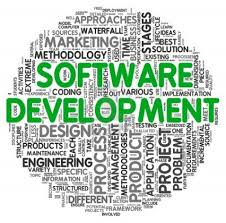

HOW START TO MAKE SOFTWARE?
SOFTWARE IN 19'S
The first piece of software was arguably created by Ada Lovelace in the 19th century, for the planned analytical engine. However, it was never executed.In the late 1970's and early 1980's, a new programing method was being developed. It was known as Object Oriented Programming, or OOP. Objects are pieces of data that can be packaged and manipulated by the programmer. Bjarne Stroustroup liked this method and developed extensions to C known as "C With Classes." This set of extensions developed into the full-featured language C++, which was released in 1983.In software engineering, a software development methodology (also known as a system development methodology, software development life cycle, software development process, software process) is a division of software development work into distinct phases or activities with the intent of better planning and management. It is often considered a subset of the systems development life cycle. The methodology may include the pre-definition of specific deliverables and artifacts that are created and completed by a project team to develop or maintain an application Common methodologies include waterfall, prototyping, iterative and incremental development, spiral development, rapid application development, and extreme programming. Some people consider a life-cycle "model" a more general term for a category of methodologies and a software development "process" a more specific term to refer to a specific process chosen by a specific organisation. Cap Gemini SDM, or SDM2 (System Development Methodology) is a software development method developed by the software company PANDATA in the Netherlands in 1970 Methodologies, processes, and frameworks range from specific proscriptive steps that can be used directly by an organisation in day-to-day work, to flexible frameworks that an organisation uses to generate a custom set of steps tailored to the needs of a specific project or group. In some cases a "sponsor" or "maintenance" organisation distributes an official set of documents that describe the process. Specific examples include: 1970s
Structured programming since 1969
Structured programming is a programming paradigm aimed at improving the clarity, quality, and development time of a computer program by making extensive use of subroutines, block structures and for and while loops—in contrast to using simple tests and jumps such as the goto statement which could lead to "spaghetti code" which is difficult both to follow and to maintain
The structured program theorem provides the theoretical basis of structured programming. It states that three ways of combining programs—sequencing, selection, and iteration—are sufficient to express any computable function.
• Cap Gemini SDM, originally from PANDATA, the first English translation was published in 1974. SDM stands for System Development Methodology
• Structured systems analysis and design method (SSADM) from 1980 onwards
• 1980: Central Computer and Telecommunications Agency (CCTA) evaluate analysis and design methods.
• 1981: Consultants working for Learmonth & Burchett Management Systems, led by John Hall, chosen to develop SSADM v1.
• 1982: John Hall and Keith Robinson left to found Model Systems Ltd, LBMS later developed LSDM, their proprietary version.
• 1983: SSADM made mandatory for all new information system developments
• 1984: Version 2 of SSADM released
• 1986: Version 3 of SSADM released, adopted by NCC
• 1988: SSADM Certificate of Proficiency launched, SSADM promoted as ‘open’ standard
• 1989: Moves towards Euromethod, launch of CASE products certification scheme
• Information Requirement Analysis/Soft systems methodology
Soft systems methodology (SSM)
Soft systems methodology (SSM) is a systemic approach for tackling real-world problematic situations.Soft Systems Methodology is the result of the continuing action research that Peter Checkland, Brian Wilson, and many others have conducted over 30 years, to provide a framework for users to deal with the kind of messy problem situations that lack a formal problem definitionSeveral software development approaches have been used since the origin of information technology, in two main categories. Typically an approach or a combination of approaches is chosen by management or a development team. The waterfall model is a sequential development approach, in which development is seen as flowing steadily downwards (like a waterfall) through several phases, typically:
• Requirements analysis resulting in a software requirements specification
• Software design
• Implementation
• Testing
• Integration, if there are multiple subsystems
• Deployment (or Installation)
• Maintenance
The first formal description of the method is often cited as an article published by Winston W. Royce in 1970 although Royce did not use the term "waterfall".
External links
- [visited on 05/11/2014] how to make software
- [visited on 05/11/2014] Software development